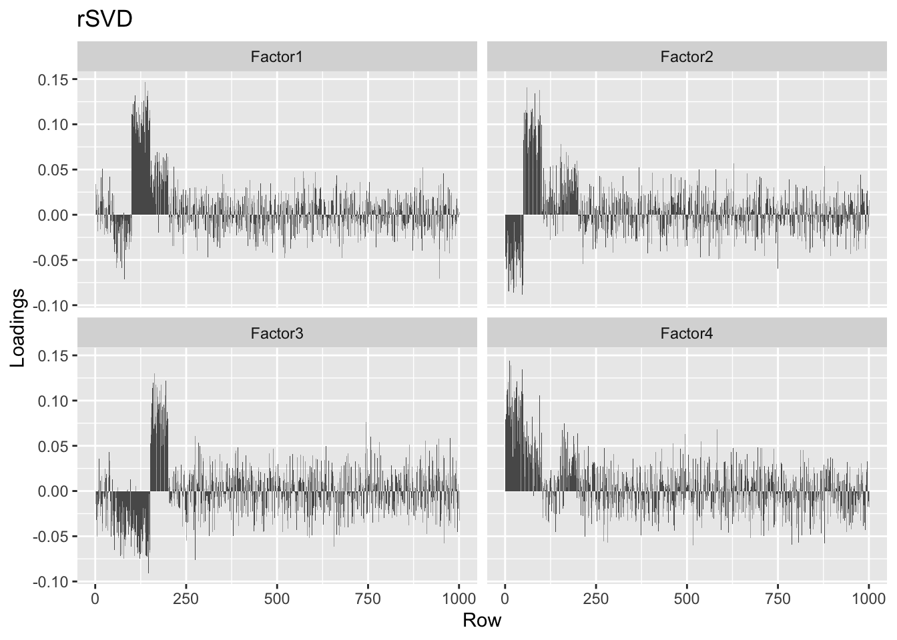
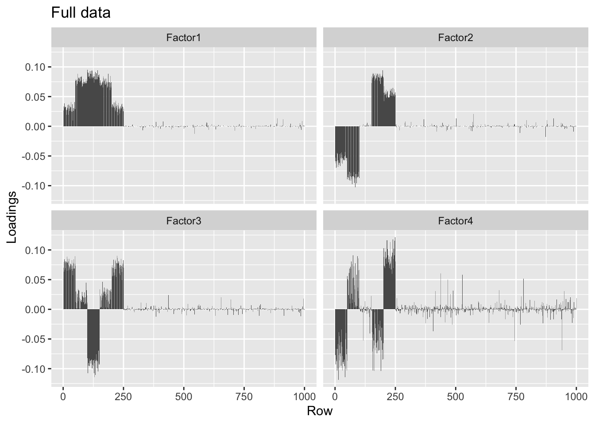
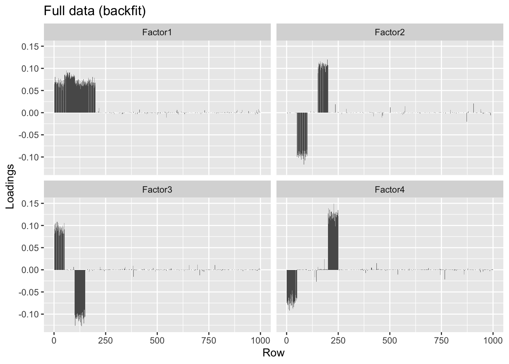

Last updated: 2019-05-29
Checks: 6 0
Knit directory: FLASHvestigations/
This reproducible R Markdown analysis was created with workflowr (version 1.2.0). The Report tab describes the reproducibility checks that were applied when the results were created. The Past versions tab lists the development history.
Great! Since the R Markdown file has been committed to the Git repository, you know the exact version of the code that produced these results.
Great job! The global environment was empty. Objects defined in the global environment can affect the analysis in your R Markdown file in unknown ways. For reproduciblity it’s best to always run the code in an empty environment.
The command set.seed(20180714) was run prior to running the code in the R Markdown file. Setting a seed ensures that any results that rely on randomness, e.g. subsampling or permutations, are reproducible.
Great job! Recording the operating system, R version, and package versions is critical for reproducibility.
Nice! There were no cached chunks for this analysis, so you can be confident that you successfully produced the results during this run.
Great! You are using Git for version control. Tracking code development and connecting the code version to the results is critical for reproducibility. The version displayed above was the version of the Git repository at the time these results were generated.
Note that you need to be careful to ensure that all relevant files for the analysis have been committed to Git prior to generating the results (you can use wflow_publish or wflow_git_commit). workflowr only checks the R Markdown file, but you know if there are other scripts or data files that it depends on. Below is the status of the Git repository when the results were generated:
Ignored files:
Ignored: .DS_Store
Ignored: .Rhistory
Ignored: .Rproj.user/
Ignored: analysis/.DS_Store
Untracked files:
Untracked: code/lowrank.R
Note that any generated files, e.g. HTML, png, CSS, etc., are not included in this status report because it is ok for generated content to have uncommitted changes.
These are the previous versions of the R Markdown and HTML files. If you’ve configured a remote Git repository (see ?wflow_git_remote), click on the hyperlinks in the table below to view them.
| File | Version | Author | Date | Message |
|---|---|---|---|---|
| Rmd | feeddff | Jason Willwerscheid | 2019-05-29 | wflow_publish(“analysis/lowrank.Rmd”) |
| html | 8369de2 | Jason Willwerscheid | 2019-05-19 | Build site. |
| Rmd | b4c08e1 | Jason Willwerscheid | 2019-05-19 | wflow_publish(“analysis/lowrank.Rmd”) |
I’ve implemented the ability to input a low-rank representation of data into flashier rather than the full data matrix. In principle, this should be much faster for very large data objects (though not for the examples considered here).
devtools::load_all("~/Github/flashier")#> Loading flashierlibrary(ggplot2)
# Plots flashier row loadings.
plot.loadings <- function(LL, title) {
df <- data.frame(LL)
colnames(df) <- paste0("Factor", 1:ncol(LL))
df <- reshape2::melt(df, measure.vars = 1:ncol(LL))
df$position <- rep(1:nrow(LL), ncol(LL))
plt <- ggplot(df, aes(x = position, y = value)) +
geom_bar(stat = "identity") + facet_wrap(~variable) +
labs(x = "Row", y = "Loadings", title = title)
print(plt)
}
# Calculates the variance that remains unexplained by a partial SVD.
calc.unexplained.var <- function(Y, svd) {
return((sum(Y^2) - sum(svd$d^2)) / prod(dim(Y)))
}I construct a matrix where each entry is sampled independently from a standard normal distribution. flashier correctly refuses to add any factors.
n <- 1000
noise <- matrix(rnorm(n^2), nrow = n)
noise.fl <- flashier(noise)#> Initializing flash object...
#> Adding factor 1 to flash object...
#> Factor doesn't significantly increase objective and won't be added.
#> Wrapping up...
#> Done.If I use a low-rank representation of the data, flashier will add factors. This is to be expected; the data is now truly low-rank, after all.
noise.svd50 <- rsvd::rsvd(noise, k = 50)
noise.fl.lr <- flashier(noise.svd50, greedy.Kmax = 5)#> Initializing flash object...
#> Adding factor 1 to flash object...
#> Adding factor 2 to flash object...
#> Adding factor 3 to flash object...
#> Adding factor 4 to flash object...
#> Adding factor 5 to flash object...
#> Nullchecking 5 factors...
#> Wrapping up...
#> Done.I can correct for this by adding some variance back in, so that the sum of squares of the low-rank representation \(LDF\) (with \(D = \text{diag}(d_1, \ldots, d_K)\)) plus the expected sum of squares from the added variance is equal to the sum of squares of the original data object \(Y\): \[ \sigma^2 = \frac{\sum_{i, j} Y_{ij}^2 - \sum_k d_k^2}{np} \]
S <- sqrt(calc.unexplained.var(noise, noise.svd50))
noise.fl.lr.addvar <- flashier(noise.svd50, S = S)#> Initializing flash object...
#> Adding factor 1 to flash object...
#> Factor doesn't significantly increase objective and won't be added.
#> Wrapping up...
#> Done.I now construct a matrix with four factors, each of which is loaded on 50 distinct rows. Even with a small signal-to-noise ratio, flashier correctly reconstructs the factors.
signal.to.noise <- 3
LL <- matrix(0, nrow = n, ncol = 4)
LL[1:50, 1] <- LL[51:100, 2] <- LL[101:150, 3] <- LL[151:200, 4] <- sqrt(signal.to.noise) / sqrt(50)
FF <- matrix(rnorm(4 * n), ncol = 4)
four.factor <- noise + LL %*% t(FF)
four.factor.fl <- flashier(four.factor)#> Initializing flash object...
#> Adding factor 1 to flash object...
#> Adding factor 2 to flash object...
#> Adding factor 3 to flash object...
#> Adding factor 4 to flash object...
#> Adding factor 5 to flash object...
#> Factor doesn't significantly increase objective and won't be added.
#> Nullchecking 4 factors...
#> Wrapping up...
#> Done.plot.loadings(four.factor.fl$loadings[[1]], "Full data")
| Version | Author | Date |
|---|---|---|
| 8369de2 | Jason Willwerscheid | 2019-05-19 |
Without adding variance, the low-rank representation of the data again produces phantom factors. In this simple example, a scree plot easily picks them out.
four.factor.svd50 <- rsvd::rsvd(four.factor, k = 50)
four.factor.fl.lr <- flashier(four.factor.svd50, greedy.Kmax = 10)#> Initializing flash object...
#> Adding factor 1 to flash object...
#> Adding factor 2 to flash object...
#> Adding factor 3 to flash object...
#> Adding factor 4 to flash object...
#> Adding factor 5 to flash object...
#> Adding factor 6 to flash object...
#> Adding factor 7 to flash object...
#> Adding factor 8 to flash object...
#> Adding factor 9 to flash object...
#> Adding factor 10 to flash object...
#> Nullchecking 10 factors...
#> Wrapping up...
#> Done.ggplot(data.frame(factor = 1:10, log10.pve = four.factor.fl.lr$pve),
aes(x = factor, y = log10.pve)) + geom_point() +
labs(x = "Factor", y = "PVE") + scale_y_log10()
| Version | Author | Date |
|---|---|---|
| 8369de2 | Jason Willwerscheid | 2019-05-19 |
When I add the unexplained variance back in, I get the correct factors, but they are quite a bit noisier than the factors obtained when I use the full data.
S <- sqrt(calc.unexplained.var(four.factor, four.factor.svd50))
four.factor.fl.lr.addvar <- flashier(four.factor.svd50, S = S)#> Initializing flash object...
#> Adding factor 1 to flash object...
#> Adding factor 2 to flash object...
#> Adding factor 3 to flash object...
#> Adding factor 4 to flash object...
#> Adding factor 5 to flash object...
#> Factor doesn't significantly increase objective and won't be added.
#> Nullchecking 4 factors...
#> Wrapping up...
#> Done.plot.loadings(four.factor.fl.lr.addvar$loadings[[1]], "Low-rank data")
| Version | Author | Date |
|---|---|---|
| 8369de2 | Jason Willwerscheid | 2019-05-19 |
Still, they look much better than the top four factors found using rsvd.
plot.loadings(four.factor.svd50$u[, 1:4], "rSVD")
| Version | Author | Date |
|---|---|---|
| 8369de2 | Jason Willwerscheid | 2019-05-19 |
I now try a more challenging example, with non-orthogonal row loadings and column loadings that are not normally distributed. flashier finds the correct number of factors, but its bias in favor of orthogonal loadings distorts the overall picture.
signal.to.noise <- 5
LL <- matrix(0, nrow = n, ncol = 4)
LL[1:100, 1] <- LL[51:150, 2] <- LL[101:200, 3] <- LL[151:250, 4] <- sqrt(signal.to.noise) / sqrt(100)
FF <- matrix(0, nrow = n, ncol = 4)
FF[sample(1:length(FF), length(FF) / 4)] <- 4 * rnorm(length(FF) / 4)
overlap <- noise + LL %*% t(FF)
overlap.fl <- flashier(overlap)#> Initializing flash object...
#> Adding factor 1 to flash object...
#> Adding factor 2 to flash object...
#> Adding factor 3 to flash object...
#> Adding factor 4 to flash object...
#> Adding factor 5 to flash object...
#> Factor doesn't significantly increase objective and won't be added.
#> Nullchecking 4 factors...
#> Wrapping up...
#> Done.plot.loadings(overlap.fl$loadings[[1]], "Full data")
| Version | Author | Date |
|---|---|---|
| 8369de2 | Jason Willwerscheid | 2019-05-19 |
round(crossprod(overlap.fl$loadings[[1]]), 2)#> [,1] [,2] [,3] [,4]
#> [1,] 1.00 -0.01 -0.04 0.00
#> [2,] -0.01 1.00 0.01 0.05
#> [3,] -0.04 0.01 1.00 0.00
#> [4,] 0.00 0.05 0.00 1.00The factors obtained using a low-rank representation of the data are slightly noisier, but very similar.
overlap.svd50 <- rsvd::rsvd(overlap, k = 50)
S <- sqrt(calc.unexplained.var(overlap, overlap.svd50))
overlap.lr.fl <- flashier(overlap.svd50, S = S)#> Initializing flash object...
#> Adding factor 1 to flash object...
#> Adding factor 2 to flash object...
#> Adding factor 3 to flash object...
#> Adding factor 4 to flash object...
#> Adding factor 5 to flash object...
#> Factor doesn't significantly increase objective and won't be added.
#> Nullchecking 4 factors...
#> Wrapping up...
#> Done.plot.loadings(overlap.lr.fl$loadings[[1]], "Low-rank data")
| Version | Author | Date |
|---|---|---|
| 8369de2 | Jason Willwerscheid | 2019-05-19 |
Backfitting helps correct some of the bias in favor of orthogonality, but doesn’t quite fix the problem.
overlap.bf <- flashier(flash.init = overlap.fl, backfit = "only",
backfit.maxiter = 500)#> Initializing flash object...
#> Backfitting 4 factors...
#> Nullchecking 4 factors...
#> Wrapping up...
#> Done.plot.loadings(overlap.bf$loadings[[1]], "Full data (backfit)")
| Version | Author | Date |
|---|---|---|
| 8369de2 | Jason Willwerscheid | 2019-05-19 |
round(crossprod(overlap.bf$loadings[[1]]), 2)#> [,1] [,2] [,3] [,4]
#> [1,] 1.00 -0.04 -0.05 -0.23
#> [2,] -0.04 1.00 0.00 0.01
#> [3,] -0.05 0.00 1.00 -0.32
#> [4,] -0.23 0.01 -0.32 1.00overlap.lr.bf <- flashier(flash.init = overlap.lr.fl, backfit = "only",
backfit.maxiter = 500)#> Initializing flash object...
#> Backfitting 4 factors...
#> Nullchecking 4 factors...
#> Wrapping up...
#> Done.plot.loadings(overlap.lr.bf$loadings[[1]], "Low-rank data (backfit)")
| Version | Author | Date |
|---|---|---|
| 8369de2 | Jason Willwerscheid | 2019-05-19 |
sessionInfo()#> R version 3.5.3 (2019-03-11)
#> Platform: x86_64-apple-darwin15.6.0 (64-bit)
#> Running under: macOS Mojave 10.14.5
#>
#> Matrix products: default
#> BLAS: /Library/Frameworks/R.framework/Versions/3.5/Resources/lib/libRblas.0.dylib
#> LAPACK: /Library/Frameworks/R.framework/Versions/3.5/Resources/lib/libRlapack.dylib
#>
#> locale:
#> [1] en_US.UTF-8/en_US.UTF-8/en_US.UTF-8/C/en_US.UTF-8/en_US.UTF-8
#>
#> attached base packages:
#> [1] stats graphics grDevices utils datasets methods base
#>
#> other attached packages:
#> [1] ggplot2_3.1.0 flashier_0.1.1 testthat_2.0.1
#>
#> loaded via a namespace (and not attached):
#> [1] Rcpp_1.0.1 rsvd_1.0.0 lattice_0.20-38
#> [4] prettyunits_1.0.2 ps_1.3.0 assertthat_0.2.1
#> [7] rprojroot_1.3-2 digest_0.6.18 foreach_1.4.4
#> [10] truncnorm_1.0-8 R6_2.4.0 plyr_1.8.4
#> [13] backports_1.1.3 evaluate_0.13 pillar_1.3.1
#> [16] rlang_0.3.1 lazyeval_0.2.2 pscl_1.5.2
#> [19] rstudioapi_0.10 ebnm_0.1-17 whisker_0.3-2
#> [22] callr_3.2.0 Matrix_1.2-15 rmarkdown_1.12
#> [25] labeling_0.3 desc_1.2.0 devtools_2.0.2
#> [28] stringr_1.4.0 munsell_0.5.0 mixsqp_0.1-119
#> [31] compiler_3.5.3 xfun_0.6 pkgconfig_2.0.2
#> [34] pkgbuild_1.0.3 SQUAREM_2017.10-1 htmltools_0.3.6
#> [37] tidyselect_0.2.5 tibble_2.1.1 workflowr_1.2.0
#> [40] codetools_0.2-16 crayon_1.3.4 dplyr_0.8.0.1
#> [43] withr_2.1.2 MASS_7.3-51.1 grid_3.5.3
#> [46] gtable_0.3.0 git2r_0.25.2 magrittr_1.5
#> [49] scales_1.0.0 cli_1.1.0 stringi_1.4.3
#> [52] reshape2_1.4.3 fs_1.2.7 remotes_2.0.2
#> [55] doParallel_1.0.14 iterators_1.0.10 tools_3.5.3
#> [58] glue_1.3.1 purrr_0.3.2 processx_3.3.0
#> [61] pkgload_1.0.2 parallel_3.5.3 yaml_2.2.0
#> [64] colorspace_1.4-1 ashr_2.2-33 sessioninfo_1.1.1
#> [67] memoise_1.1.0 knitr_1.22 usethis_1.5.0